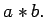

Inhalt Index DeskTop Bronstein

 Algebra und Diskrete Mathematik Klassische algebraische Strukturen Gruppen Definition und grundlegende Eigenschaften
Algebra und Diskrete Mathematik Klassische algebraische Strukturen Gruppen Definition und grundlegende Eigenschaften


Zur Darstellung endlicher Gruppen werden Gruppen- oder CALEY-Tafeln verwendet: Man notiert die Gruppenelemente als Zeilen- und Spalteneingänge. An der Kreuzung der Zeile mit dem Eingang a und der Spalte mit dem Eingang b steht das Gruppenelement 
| Beispiel | ||||
|
Ist M ={ 1,2,3}, so bezeichnet man die symmetrische Gruppe SM auch mit S3. Die S3 besteht also aus allen bijektiven Abbildungen (Permutationen) auf der Menge {1,2,3} und hat demzufolge 3! =6 Elemente. Permutationen werden meist zweizeilig notiert, indem man in die erste Zeile die Elemente von M und darunter die jeweiligen Bildelemente schreibt. So erhält man die 6 Elemente der S3 folgendermaßen:
Mit der Hintereinanderausführung (binärer Operationen ) von Abbildungen erhält man für S3 folgende Gruppentafel: Gruppentafel für S3
|